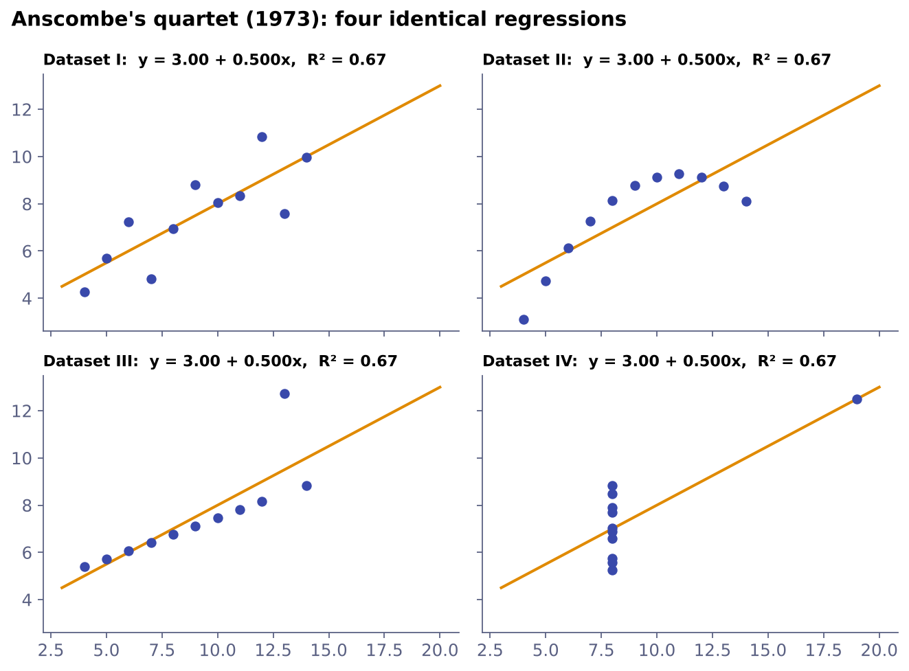
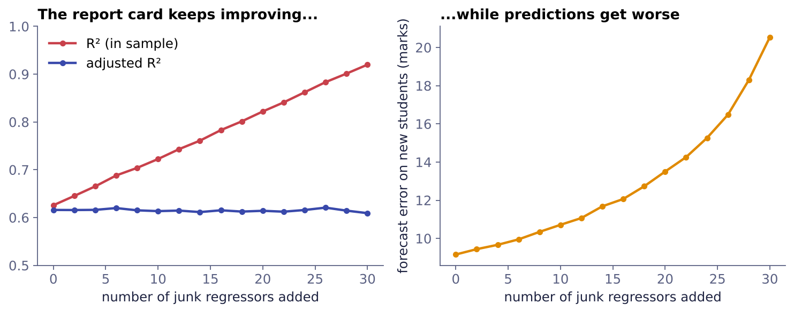

R-squared Is Not a Report Card
Every econometrics teacher has met this student. They run a regression, look straight at the R-squared, and feel either proud or ashamed. 0.9 is an A+. 0.2 is a fail. If it is low, add more variables until it goes up.
This post is for that student. We'll meet a statistician who drew four pictures that destroyed the R-squared's reputation, a Japanese mathematician who taught us how to charge rent for every variable, and a simulation in which the "better" model predicts twice as badly.
Foundations · Post 3 of 8
1. Omitted variables · 2. Spurious regression · 3. R-squared · 4. Measurement error · 5. Heteroskedasticity · 6. Dummy variables · 7. Structural breaks · 8. Multicollinearity
Data: blog_datasets.xlsx, sheet P3_rsquared · Simulated cross-section, 40 students · EViews program
What R-squared actually measures
Split the variation in the dependent variable into the part the line explains and the part it misses:
That's all it is: the share of the scatter in \(y\) that the fitted line covers, in this sample. It says nothing about causation, bias, or whether the model will work tomorrow.
Four pictures that changed statistics
In 1973 the statistician Francis Anscombe published a short paper in The American Statistician called "Graphs in Statistical Analysis". He constructed four small datasets, 11 points each, now known as Anscombe's quartet. All four have the same mean of x, the same mean of y, the same correlation, the same regression line, and the same R-squared of 0.67.

- I is what a regression is meant for.
- II is a perfect curve, badly described by a straight line.
- III is a perfect straight line, dragged off course by one outlier.
- IV has no relationship at all, except for one point that creates the entire slope.
Same R-squared, four completely different stories. Anscombe's message, still worth tattooing on your arm: plot your data before you trust your numbers.
A simple, honest model
Forty students. We know each student's exam SCORE (out of 100) and the HOURS they studied in the week before the exam. The true rule I used: each hour is worth 4 marks.
ls score c hours
Dependent Variable: SCORE
Method: Least Squares
Date: 10/27/26 Time: 21:45
Sample: 1 40
Included observations: 40
==============================================================================
Variable Coefficient Std. Error t-Statistic Prob.
==============================================================================
C 36.44818 3.203590 11.37729 0.0000
HOURS 3.937217 0.436062 9.029020 0.0000
==============================================================================
R-squared 0.682070 Mean dependent var 63.30000
Adjusted R-squared 0.673704 S.D. dependent var 13.18741
S.E. of regression 7.532959 Akaike info criterion 6.925160
Sum squared resid 2156.328 Schwarz criterion 7.009603
Log likelihood -136.5032 Hannan-Quinn criter. 6.955692
F-statistic 81.52321 Durbin-Watson stat 2.699434
Prob(F-statistic) 0.000000
==============================================================================
Each extra hour of study is worth about 3.9 marks. Not bad at all.
Now let's "improve" it
Our ambitious student wants a higher R-squared. So they add four more variables: SHOE size, BMONTH (month of birth), LETTERS (number of letters in the first name), and BUSWAIT (minutes spent waiting for the bus on exam morning). None of these has anything to do with the score. I generated them as pure noise.
ls score c hours shoe bmonth letters buswait
Dependent Variable: SCORE
Method: Least Squares
Date: 10/27/26 Time: 21:45
Sample: 1 40
Included observations: 40
==============================================================================
Variable Coefficient Std. Error t-Statistic Prob.
==============================================================================
C 44.36399 8.200577 5.409862 0.0000
HOURS 3.956930 0.469772 8.423090 0.0000
SHOE -0.426822 0.845106 -0.505051 0.6168
BMONTH -0.350492 0.393803 -0.890019 0.3797
LETTERS -0.040333 0.539248 -0.074795 0.9408
BUSWAIT -0.078291 0.076610 -1.021945 0.3140
==============================================================================
R-squared 0.698956 Mean dependent var 63.30000
Adjusted R-squared 0.654685 S.D. dependent var 13.18741
S.E. of regression 7.749381 Akaike info criterion 7.070584
Sum squared resid 2041.799 Schwarz criterion 7.323916
Log likelihood -135.4117 Hannan-Quinn criter. 7.162181
F-statistic 15.78809 Durbin-Watson stat 2.675735
Prob(F-statistic) 0.000000
==============================================================================
R-squared went up, from 0.682 to 0.699. Shoe size and bus waiting time "explained" more of the exam scores!
Why R-squared can never fall
OLS chooses coefficients to make the sum of squared residuals as small as possible. Adding a variable gives OLS one more knob to turn. At worst it can set that knob to zero and get the old fit back, so the SSR can only fall or stay the same. Since \(R^2 = 1 - SSR/TSS\) and TSS doesn't change, \(R^2\) never falls when you add a regressor. Here SSR fell from 2156.3 to 2041.8, by pure luck.
Charging rent for every variable
Adjusted R-squared
The fix usually credited to the Dutch econometrician Henri Theil (1961) charges for each extra coefficient:
where \(k\) is the number of coefficients. There is a lovely little result hidden in it:
A neat fact: adjusted R-squared rises only if |t| > 1 (click to open)
Add one variable to a regression. One can show that \(\bar R^2\) increases if and only if the absolute value of the new variable's t-statistic is greater than 1.
So adjusted R-squared is a very lenient judge: it would keep a variable with t = 1.2, which no ordinary 5% test would accept. In our data each junk variable added on its own has |t| below 1 (SHOE −0.63, BMONTH −0.74, LETTERS 0.01, BUSWAIT −0.90), and every one of them lowers adjusted R-squared from 0.674.
Information criteria (Akaike, Schwarz)
Hirotugu Akaike, of Japan's Institute of Statistical Mathematics, formally introduced his information criterion (AIC) in a 1974 paper. In 2006 he received the Kyoto Prize for it, and in 2017 Google honoured his 90th birthday with a Google Doodle. Not many statisticians get a Doodle.
In 1978 Gideon Schwarz proposed a stricter version, the Schwarz or Bayesian information criterion. EViews reports both, scaled by the number of observations \(n\):
where \(\ell\) is the log likelihood. The first term rewards fit; the second is the rent. Smaller is better. Since \(\ln n > 2\) whenever \(n > 7\), Schwarz charges more rent per variable than Akaike.
| Measure | HOURS only | HOURS + 4 junk variables | Better model |
|---|---|---|---|
| R-squared | 0.682 | 0.699 | Looks like junk wins |
| Adjusted R-squared | 0.674 | 0.655 | HOURS only |
| S.E. of regression | 7.53 | 7.75 | HOURS only |
| Akaike info criterion | 6.925 | 7.071 | HOURS only |
| Schwarz criterion | 7.010 | 7.324 | HOURS only |
The F-test
The most direct check: do the four junk variables matter jointly? View → Coefficient Diagnostics → Wald Test, with c(3)=0, c(4)=0, c(5)=0, c(6)=0.
Wald Test:
Equation: EQ3B
==============================================================================
Test Statistic Value df Probability
==============================================================================
F-statistic 0.476784 (4, 34) 0.7525
Chi-square 1.907137 4 0.7528
==============================================================================
p = 0.75. No reason to keep any of them.
The proof: predicting new students
The real test of a model is whether it predicts data it hasn't seen. I simulated 1,500 classes. In each, I fitted the model on 40 students and then predicted the scores of 40 new students, adding 0, 2, 4, … up to 30 junk regressors.

With no junk, the average R-squared is 0.63 and the forecast error on new students is about 9 marks. With 30 junk variables, the R-squared climbs to 0.92, and the forecast error more than doubles to 20.5 marks. Adjusted R-squared stays flat at about 0.61 throughout: it is honest about the junk, though not strict enough to throw it out on its own.
This is overfitting: the model memorises the noise of this particular class instead of learning the rule. It is the most common sin in machine learning as well as in econometrics.
A low R-squared can be perfectly fine
What if your R-squared is 0.15? Don't panic. Human behaviour is noisy. If you want to know how much an extra hour of study is worth, what matters is whether the slope is unbiased and precise. A model can capture a true, important effect and still leave most of the variation unexplained. In Post 4, the correct model has an R-squared of only 0.38. In Post 2, a completely meaningless regression has 0.72.
The lesson
R-squared answers one narrow question: how closely does the line hug the data in this sample? To choose between models, use adjusted R-squared, information criteria, F-tests and, best of all, out-of-sample prediction. And always, as Anscombe insisted, look at the picture.
Something to think about
Model A explains house prices with \(R^2\) = 0.90 using 25 variables and 60 houses. Model B explains them with \(R^2\) = 0.70 using 3 variables. You must predict the price of the next 100 houses that come on the market. Which model would you trust, and what one calculation would you ask for before deciding? Leave your answer in the comments.